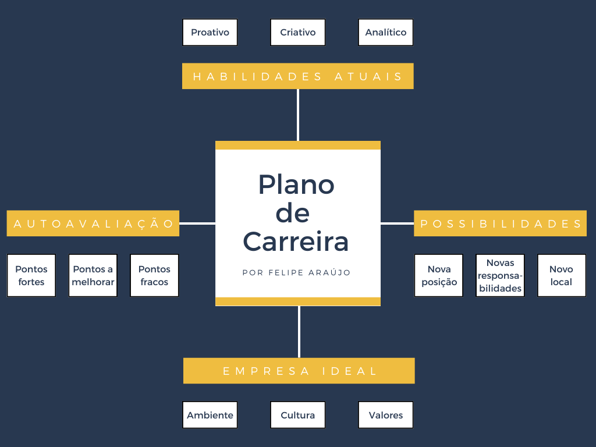

Publicado dia 15 de fevereiro de 2022
O plano de carreira é um dos nossos produtos mais interessantes que ofertamos, ensinando aos nossos alunos a criarem o próprio. Tendo em vista que com um plano de carreira claro, nós podemos ter uma visão melhor sobre onde, como e com quem queremos trabalhar, garantindo uma maior qualidade de trabalho, sem falar em outros termos que nosso curso aborda com relação ao plano de carreira.
Nessa amostra do nosso curso, com plano de carreira é possivel observar alguns pontos como a AUTOAVALIAÇÃO, EMPRESA IDEAL, POSSIBILIDADES e HABILIDADES ATUAIS. Com esses tópicos podemos analisar se nos aderimos a empresa que estamos nos cadidatando, se vamos nos dar bem nesse ambiente de trabalho, se vamos crescer profissionalmente, se estamos preparados para determinada função etc. Não perca tempo e venha conhecer mais do nosso plano de carreira e curso.
Para saber mais sobre o plano de carreira, outros produtos do nosso curso e como conquistar a sua primeira vaga no mercado de trabaho de TI com maestria, é simples, basta clicar em CURSO lá em cima na nossa barra inicial e fazer sua inscrição em seguida. Acrescentando que lá você vai conhcer mais um pouco da nossa empresa e produtos. Vem fazer parte da família FWIT, esperamos você!